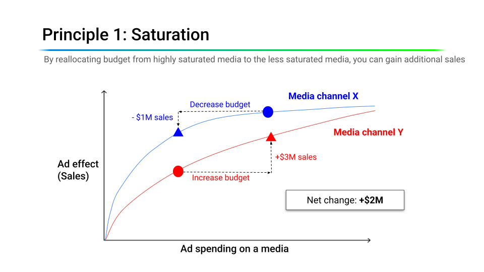
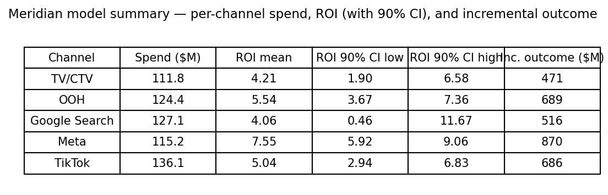
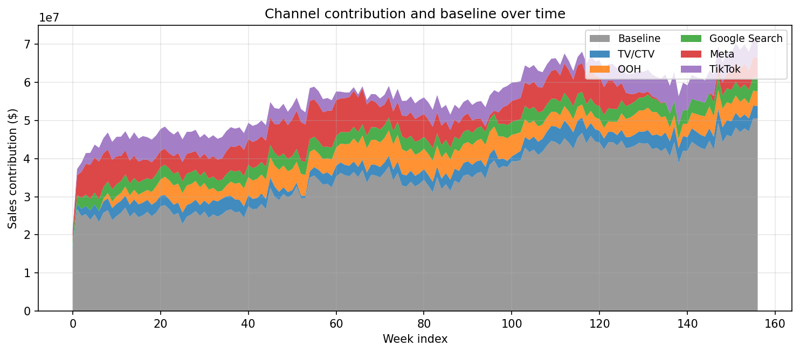

6.2 MMMの構築と最適化
日本語版について
このページは英語版 Marketing Science in Python のAI翻訳です。英語版を正本とし、差異がある場合は英語版を優先してください。コード、Notebook、画像内の文字は英語のままです。 英語版を読む
マーケティング・ミックス・モデリングとは何か？
マーケティング・ミックス・モデリング（MMM）とは、集計された時系列データ（通常は週次の売上とチャネル別メディア支出）を使って、各マーケティングチャネルが事業成果にどれだけ寄与したかを推定する統計的アプローチである。ユーザーレベルのアトリビューションと違い、MMMは集計データを扱い、個人の追跡を必要としない。そのため、Cookieの消失、App Tracking Transparency、ウォールドガーデンの制約に強い。
MMMには3つの目的がある。
- 測定：各チャネルの寄与と広告費用対効果（ROAS）を定量化する。
- シミュレーション：たとえばTV支出を30%削減すると売上はどうなるか、という「もしも」の問いに答える。
- 最適化：期待成果を最大化するよう、固定予算をチャネル間に配分する。

MMMへの関心が再び高まっているのは、単なる懐古ではない。ユーザーレベルの追跡の信頼性が下がるなか、集計モデルはいまやチャネル横断のメディア効果を測る最も実用的な方法である。
MMMの方程式
最も単純なMMMは、祝日、販促、その他の非メディア要因を統制し、週次売上をメディア支出で回帰するモデルである。
\[ y_t = \beta_0 + \sum_{c=1}^{C} \beta_c \cdot x_{c,t} + \sum_{k} \gamma_k \cdot z_{k,t} + \varepsilon_t \]
ここで、\(y_t\)は時点\(t\)の売上、\(x_{c,t}\)はチャネル\(c\)への支出、\(z_{k,t}\)は統制変数、\(\varepsilon_t\)はノイズである。

この単純な回帰だけでは不十分な理由が2つある。第一に、メディア効果は即時に終わらない。今週のTV広告が翌週以降の購買にも影響しうる（キャリーオーバー）。第二に、メディア効果は線形ではない。1週間に追加される100番目のGRP（gross rating point、TV視聴者への到達量を表す標準指標）は、最初のGRPほどの効果を生まない（収穫逓減）。
より現実的なモデルでは、線形結合の前にアドストック（キャリーオーバー）と飽和（収穫逓減）の変換を適用する。
\[ y_t = \beta_0 + \sum_{c=1}^{C} \beta_c \cdot \text{Saturation}\bigl(\text{Adstock}(x_{c,t})\bigr) + \sum_{k} \gamma_k \cdot z_{k,t} + \varepsilon_t \]

飽和（収穫逓減）
どのメディアチャネルも、いずれは飽和する。 1つのチャネルに多く支出するほど、追加の1ドルが生む収益は小さくなる。最初の100万ドルのTV支出は大きな増分売上を生むが、1,000万ドル目の効果ははるかに小さい。図 4 は、そこから生じる3つの領域を示す。各ドルがまだ大きく働く過少投資領域、最適範囲、そして追加支出の大部分が無駄になる飽和領域である。

これをモデル化する最も一般的な方法がHill関数である。
\[ \text{Hill}(x) = \frac{x^S}{x^S + K^S} \]
ここで、\(K\)（半飽和点、EC50とも呼ばれる）はチャネルが最大効果の50%に達する支出水準であり、\(S\)（傾き）は曲線がどれほど急に曲がるかを制御する。
\(K\)の事前分布を設定するときには、実務上の注意が1つある。Meridianは正規化せずにアドストックを適用する。そのため、半減期が6週間のチャネルでは、アドストック後の値が週次中央値の数倍になり、半飽和点もその大きなスケール上に置く必要がある。減衰の速いチャネルを中心にした事前分布では、減衰の遅いチャネルの真値を除外してしまう。そこでデモでは、ファネル構造をアドストック側に持たせ、飽和にはチャネルに依存しない単一の事前分布を与える。データ中のすべての曲線を覆えるほど広くし、それぞれの位置は尤度に決めさせる。
この曲率があるからこそ、予算再配分に価値が生まれる。図 5 では、チャネルXは飽和領域の奥深くにいる一方、チャネルYにはまだ余地がある。Xの予算を削ると売上を$1M失うが、その予算をYに追加すると$3Mを得る。同じ総支出で正味$2Mの増加である。飽和したチャネルの平均ROASの方が高く見えても、そこから過少投資のチャネルへ予算を移すことで、総リターンを増やせる場合がある。平均ROASは、チャネルの増分売上合計を総支出で割った値である。限界ROASは、チャネルが現在位置する点での曲線の傾きであり、次の1ドルが生むリターンを表す。

アドストック（キャリーオーバー効果）
広告は、放映が終わった瞬間に効かなくなるわけではない。アドストックは、この遅延効果を捉える。最も単純な形は幾何減衰である。
\[ \text{Adstock}_t = x_t + \lambda \cdot \text{Adstock}_{t-1} \]
ここで、\(\lambda \in [0, 1]\)は残存率である。\(\lambda\)が高いほどキャリーオーバーが長い。図 6 と 図 7 は、同じ3回の広告フライトを2つの残存率で示している。TVのような上位ファネルのチャネルに典型的な高い残存率では、各フライトの効果が放映後も長く残り、重複するフライトが積み重なる。デジタルチャネルに典型的な低い残存率では、効果は数日で薄れる。


残存率は、効果が半分に低下するまでの期間数、すなわち半減期 \(\ln(0.5) / \ln(\lambda)\) として考える方がわかりやすい。週次粒度では、TVのような上位ファネルのチャネルは一般に数週間の半減期でモデル化される一方、有料検索のような下位ファネルのチャネルは約1週間以内に減衰する。付属デモでは、すべてのチャネルを12週間のウィンドウで幾何アドストックによりモデル化し、ファネル段階ごとに減衰の事前分布を設定する。TV/CTVとOOHは6週間（\(\lambda \approx 0.89\)）、MetaとTikTokは3週間（\(\lambda \approx 0.79\)）、Google Searchは1週間（\(\lambda = 0.5\)）である。これらは事実ではなく、データによって動かされる出発点の事前分布として扱うべきだ。公表されている指針には幅があり、適切な値はカテゴリーとデータ粒度に依存する。「週次」の残存率を日次データに適用すれば、まったく異なる半減期を意味する。
より柔軟な代替手法もある。Weibullアドストックでは、減衰形状を非単調にできる。接触から数日後に効果がピークを迎えてから減衰させられるため、自然な処理遅延があるメールやダイレクトメールのようなチャネルをよりよく捉えられる。
データ要件
MMMには3種類の入力データが必要である。
- 目的変数：ブランドまたは製品レベルの週次売上高もしくは販売数量。
- メディア支出：チャネル別の週次支出（TV、ソーシャル、ディスプレイ、検索、ダイレクトメールなど）。
- 統制変数：祝日、季節性指標、販促、価格変更、競合活動、マクロ経済要因など、売上変動を説明しうる非メディア要因。

推奨される粒度は次のとおりである。
- 時間：週次。日次データはノイズが多く、月次データでは観測数が少なすぎる。
- 履歴：少なくとも2〜3年（およそ104〜156週）。履歴が短いと、メディア効果を季節性から分離するのが難しくなる。
- 地域：全国またはブランドレベルが一般的。国より細かな地域レベルのモデルはより強力になりうるが、より多くのデータと慎重なモデル化が必要である。
- チャネル：実際に支出が変動するチャネルだけを含める。毎週同じ金額を使うチャネルでは、モデルはその効果を学習できない。
ここには、見落としやすい確認事項がもう1つある。アドストックと飽和はチャネルの寄与を平滑化する。その結果、統制変数で説明できなかった部分よりも、メディアによる売上の週次変動の方が小さくなることがある。この場合、メディア係数は識別できず、どのような事前分布を選んでも修復できない。推定器にはメディアをベースラインから分離する材料が残っていないからである。モデル適合前にこの2つの量を比較する。付属ノートブックではStep 2bで行っている。
統制変数が重要である理由はもう1つある。メディア支出と売上は、仕組み上、トレンドと季節性を共有することが多い。共通のカレンダーだけで、互いに無関係な2系列の間に強い相関が作られうる。季節性とトレンドの統制変数が、その共有構造をメディア係数に混入させない役割を果たす。

ベイズ的アプローチ
実装を見ていく前に、注目すべき設計上の選択が1つある。現代のMMMは主としてベイズ的である。 その理由は哲学的なものではなく、実務的なものだ。
- 事前分布にドメイン知識を組み込める。 過去の実験からTVのROASがおよそ2.0だとチームが知っているなら、それを事前分布として組み込める。モデルはデータを使ってこの信念を更新する。事前分布がなければ、多重共線性だけが理由で非現実的な推定値が生じることがある。この利便性の裏側も明記しておく価値がある。データで識別できないチャネルについて、モデルが返す値は、事前分布に入れた値である。デモにはそのようなチャネルが1つあり、Section 6.3で実際に測定する。
- 点推定ではなく信用区間。 「TV ROAS = 2.3」ではなく、「TV ROAS：中央値2.3、90% CI [1.1, 3.8]」が得られる。区間が広ければ、その推定に基づく大きな予算移動には慎重になるべきだ。
- 実験と自然に統合できる。 地域リフト実験を実施してチャネルの増分効果を推定したら、その証拠を情報量のある事前分布としてMMMへ渡せる。これにより事後分布が狭まり、識別性が改善する。このワークフローはSection 6.4で詳しく扱う。
これが、MeridianやPyMC-Marketingのようなツールが内部でベイズ推論を使う理由である。
本章の概念を実装するオープンソースライブラリはいくつかある。最も広く使われている3つを示す。
| ライブラリ | 特徴 | GitHub |
|---|---|---|
| Meridian | GoogleによるPythonベースのベイズMMM。地域レベルのデータと実験による較正を強く支援する。現在は非推奨となったLightweightMMMの後継。 | google/meridian |
| PyMC-Marketing | Pythonベースのベイズ・マーケティングモデリング・ツールキット。MMM、CLV、顧客選択モデルを扱う。柔軟だが、より多くのモデリング判断が必要。 | pymc-labs/pymc-marketing |
| Robyn | MetaによるRベースのMMMライブラリ。Ridge回帰とProphetを使う。ベースラインモデルをすばやく構築するのに向く。 | facebookexperimental/Robyn |
中核となる概念（アドストック、飽和、ベイズ推定、予算最適化）は3つすべてで共通している。本章でMeridianを使うのは、Pythonベースで始めやすいからである。あまりカスタマイズしなくても、モデル結果と予算最適化について、ステークホルダーと共有できる整った2ページのHTMLレポートを生成する。以下のウォークスルーから両方にリンクしている。
Meridianによるウォークスルー
付属ノートブック： sec6.2_6.4_mmm_meridian.ipynbは、GoogleのMeridianライブラリを使った完全なMMMワークフローを実演する。
GitHubで見る
データの読み込みと準備。 デモのデータセットには、5つのメディアチャネル（TV/CTV、OOH、Google Search、Meta、TikTok）と祝日・季節性の統制変数を含む157週間の売上データがある。MeridianはDataFrameInputDataBuilderを使ってpandas DataFrameから入力データを構築する。スケーリングは内部で処理されるため、手動の正規化は不要である。重要なのは、Meridianがmedia_cols（インプレッションやクリックなどの接触量）に飽和を適用し、media_spend_colsをROASの費用基準として使う点である。
channels = ["TV/CTV", "OOH", "Google Search", "Meta", "TikTok"]
media_cols = [
"tv_ctv_impressions", "ooh_impressions", "google_clicks",
"meta_impressions", "tiktok_impressions",
]
media_spend_cols = [
"tv_ctv_spend", "ooh_spend", "google_spend",
"meta_spend", "tiktok_spend",
]
control_cols = [
"seas_sin52", "seas_cos52",
"hldy_thanksgiving", "hldy_christmas",
"trend", "trend_sq",
]
builder = data_frame_input_data_builder.DataFrameInputDataBuilder(
kpi_type='revenue',
default_kpi_column='sales',
default_time_column='time',
default_geo_column='geo',
)
data = (
builder
.with_kpi(df)
.with_media(df,
media_cols=media_cols,
media_spend_cols=media_spend_cols,
media_channels=channels)
.with_controls(df, control_cols=control_cols)
.build()
)モデルの学習。 MeridianはMCMCにNo-U-Turn Sampler（NUTS）を使う。まず健全性確認のため事前分布からサンプルを生成し、次に事後分布をサンプリングする。
mmm = model.Meridian(input_data=data, model_spec=model_spec)
mmm.sample_prior(500)
mmm.sample_posterior(
n_chains=4, n_adapt=500, n_burnin=500, n_keep=1000, seed=SEED
)
# Production runs typically use n_chains=10, n_keep=2000 (≈ 5× compute).診断。 MeridianのModelReviewerは、自動品質チェック（収束、ベースライン検証、適合度、事前分布から事後分布への変化）を実行し、pass/review/failのステータスを報告する。

モデルの適合。 週単位で25%をランダムにホールドアウトすると、デモではサンプル内R² ≈ 0.97、サンプル外R² ≈ 0.97となる。ここで内外の差が小さいのは予想どおりである。合成データとランダムな（補間）ホールドアウトの組み合わせは、最良に近い条件だからだ。現実のノイズ、トレンドが崩れた期間、まとまりのない販促活動を含む本番データでは、サンプル外R²が0.6〜0.7の範囲でも一般的かつ許容可能である。見出しとなる適合度だけでなく、メディア推定の方向性を信頼する。
Section 5.3ではランダム分割を完全に退けているのに、なぜここではランダムホールドアウトなのか。2つが評価している対象が違うからである。予測は学習ウィンドウの先を外挿する必要があるため、固定した起点から将来に向かって評価しなければならない。MMMは、観測済みの期間内で、すでに発生した売上の功績を配分する。末尾ブロックのホールドアウトでは、その期間を越えてトレンドと季節性を外挿するよう求めることになり、メディア測定とは無関係の理由でサンプル外R²が低下する。ホールドアウトを散在させれば、このモデルにとって有用な問い、すなわち尤度が見ていない週でも適合した構造が成立するかを問える。この数値は補間の診断として読み、モデルが次四半期を予測できる証拠とは解釈しない。


メディアに関する洞察。 モデルは各チャネルについて、信用区間付きのROAS推定値を返す。区間が広いのは、実際に不確実性があるという意味であり、不具合ではなく機能である。点推定だけでは誤解を招くことがある。信用区間は、結果をどの程度信頼すべきかを示す。


これらのグラフを1つずつ作る必要はない。summarizer.Summarizer(mmm).output_model_results_summary(...)を1回呼ぶだけで、モデル適合、チャネル寄与、信用区間付きROAS、反応曲線をまとめた、ステークホルダー向けの2ページHTMLレポートが書き出される。付属ノートブックが生成した例はsummary_output.htmlで確認できる。
予算配分
モデルの3つの目的（測定、シミュレーション、最適化）は、ここで合流する。 反応曲線を適合した後、オプティマイザーは固定予算の制約下で予測KPIを最大化する配分を探索する。
budget_optimizer = optimizer.BudgetOptimizer(mmm)
optimization_results = budget_optimizer.optimize()これは 図 5 と同じ飽和の論理を、2チャネルではなくメディアミックス全体に適用したものである。オプティマイザーは、次の1ドルがまだ最も大きく働くチャネルへ予算を移す。

オプティマイザーにも同じ便利なレポート機能がある。optimization_results.output_optimization_summary(...)は、推奨される再配分をまとめた2ページのHTMLレポートを書き出す（optimization_output.html）。
デモでは、オプティマイザーがモデル化された5チャネル（TV/CTV、OOH、Google Search、Meta、TikTok）間で支出を再配分し、限界反応曲線が平坦なチャネルから、残りの余地が大きいチャネルへ予算を移す。総予算は変わらず、ミックスだけが変わる。チームが初めてMMMを導入すると、再配分だけでメディア由来の（増分）売上が5〜10%伸びることは珍しくない。このデモでは約+4%、総売上に換算するとおよそ+1.4%である。
オプティマイザーと計画の間には、もう1つルールが必要である。オプティマイザーは事後平均に基づいて予算を動かすが、計画はモデルが実際に知っていることに基づいて動かすべきだ。そこでノートブックは、オプティマイザーが使う量である限界ROASにガードレールを適用する。90%区間の幅が推定値の0.8倍より大きいチャネルは、推奨移動がどれほど大きくても現在の支出に据え置く。区間が広いのは、モデルがそのチャネルを識別できていないと伝えているのであり、必要な答えは証拠であって、より大きな賭けではない。これはガバナンスルールの例であり、普遍的な統計的閾値ではない。デモでは推奨移動の74%を承認し、1チャネルを据え置く。
オプティマイザーの出力は、最終的なメディア計画ではなく、計画の出発点として使う。モデルは契約、最低支出額、運用上のリードタイムといった現実の制約を考慮しない。それらは別途重ねる必要がある。そしてこのデモでは、モデルが正当化できない推奨が1つ出る。
| 検証する意思決定 | 値 |
|---|---|
| チャネル | Google Search |
| オプティマイザー | −30%（−$38.1M）、制約の下限に固定 |
| ガードレール | HOLD：限界ROAS区間 [0.31, 8.28]、相対半幅1.41 |
| テスト前予測 | 30%削減すると8週間で、削減1ドルあたり$2.54の売上を失う。90%信用区間 [0.28, 7.21] |
| 提案するテスト | マッチさせた8組の地域でSearchを−30%、8週間 |
| 意思決定ルール | 95% CI上限が2.50未満なら削減（利益率40%で損益分岐） |
この予測は、結果が存在する前の今の時点で記録する。そうすれば、実験はチャネルだけでなくモデルも採点できる。反応曲線は観測データから構築されているため、次のステップはこの推奨を検証することである。Section 6.3でその実験を設計・分析し、Section 6.4で結果をモデルへ戻す。
重要なポイント
- MMMは集計時系列からチャネル寄与を推定するため、Cookieの消失とウォールドガーデンに耐えられる。週次データ、2〜3年の履歴、各チャネルに実際の支出変動が必要である。
- アドストックと飽和は支出を反応曲線へ変換する。その曲線が、平均ではなく限界リターンで配分すべき理由である。平均ROASが高いチャネルでも、すでに飽和している場合がある。
- データで識別できないチャネルについて、モデルは与えた事前分布を返す。区間が広すぎて正当化できない推奨は保留し、モデルの予測を記録してから実際に測定する。